3 Лабораторная работа. "Оценка загруженности и производительности вычислительной машины посредством тестовых программ и средств операционной системы."
Теоретическая часть
Все компоненты вычислительных систем имеют свои характеристики. Наиболее важными характеристиками являются частота, на которой работает устройство, скорость работы устройства, а также - скорость передачи данных.
Частота работы компонентов вычислительной системы.
Частота является одной из главных характеристик процессора, оперативной памяти и прочих устройств.
В микропроцессорной технике один тактовый импульс (сигнал, как правило, прямоугольной формы) соответствует одной атомарной операции. Импульсы, проходя через все элементы компьютера, заставляют их работать в едином такте – синхронно, подобно тому, как на параде все войска идут в ногу, подобно метроному, задающему скорость игры на фортепиано, подобно дирижеру в оркестре.
Импульсы вырабатываются генератором. Генератор тактовой частоты (генератор тактовых импульсов) - устройство (микросхема) для выработки через равные отрезки времени последовательности импульсов. Время между двумя последовательными импульсами называется тактом. Генератор задает базовую тактовую частоту.
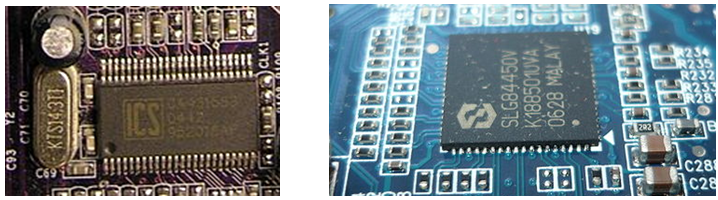
Обработка одной инструкции (например, команды процессора) может производиться за один или несколько тактов работы микропроцессора, в зависимости от архитектуры и типа инструкции. Частота генерации тактовых импульсов определяет скорость вычислений в частности и быстродействие компьютера в целом. Как правило, чем выше тактовая частота процессора, тем выше его производительность, хотя связь не линейна.
Частота процессора определяется базовой частотой, увеличенной за счет множителя процессора в некоторое количество раз.
Также к частоте базового генератора привязаны частоты других шин компьютера: PCI Express, PCI, SATA и шина оперативной памяти.
Важно понимать: частота работы процессора не совпадает с количеством команд, выполняемых процессором. Причиной тому является то, что одна команда может исполняться некоторое количество тактов, причем количество тактов для выполнения каждой команды различно. Частота работы оперативной памяти не совпадает с количеством переданной памятью информации, так как в современной памяти передача информации производится как по переднему фронту импульса, так и по заднему. Линейной связи между частотой работы устройства и его производительностью нет. Чем больше частота, тем выше производительность, хотя это правило не абсолютно. Все определяется архитектурным решением конкретного устройства.
Важно понимать: скорость работы системы в целом определяется не только скоростными характеристиками отдельных компонентов, но и скоростью работы шин, объединяющих компоненты.
В рамках теоретической части приведены некоторые характеристики процессоров, оперативной памяти и существующих интерфейсов. Для сопоставления и анализа скоростных характеристик систем для комплектующих и интерфейсов указано время эксплуатации устройства.
Характеристики производительности процессора различных поколений.
Ниже приведен краткий список моделей процессора, наглядно демонстрирующий рост тактовой частоты, производительности и количества транзисторов по времени от 1970-х годов до наших дней.
В качестве характеристик процессора указаны год выпуска, разрядность, частота работы процессора, количество транзисторов на кристалле и производительность.
Разрядность часто используют при описании вычислительных устройств и систем, понимая под этим число бит, одновременно хранимых, обрабатываемых или передаваемых в другое устройство. Для наиболее заинтересованных студентов можно порекомендовать ознакомиться со статьей о разрядности, расположенной на http://www.ixbt.com/cpu/cpu-bitness.shtml (Ссылки на внешний сайт.)Ссылки на внешний сайт..
Производительность процессора в разное время измерялась в различных величинах. Для первых процессоров указаны MIPS (Million Instructions Per Second). По мере развития архитектур данная единица измерения стала считаться некорректной: различные инструкции (команды процессора) выполняются за различное время. Наиболее верным было принято измерение производительности в FLOPS (Floating Point Operations Per Second), так как именно на операции с плавающей точкой тратится наибольшее количество процессорного времени.
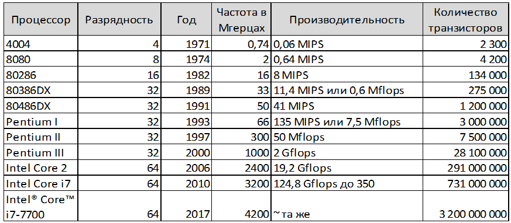
*Модели более современных процессоров в таблице не приведены по причине относительно незначительных отличий указанных характеристик: разрядность сохраняется 64, частота поднимается до 5 ГГц, количество транзисторов и производительность имеет тот же порядок, что и последние указанные в таблице модели.
Пропускная способность оперативной памяти.
Ниже приведены различные модели оперативной памяти с 80х годов до нашего времени для одноканального режима работы.
Обратите внимание: до синхронной DDR - памяти применялась асинхронная SIMM (single in-line memory module — односторонний модуль памяти) или DIMM (Dual In-line Memory Module, двухсторонний модуль памяти) память. В настоящее время наиболее популярна DDR4.
Для каждой модели указаны примерное время выпуска и эксплуатации, объем оперативной памяти стандартного персонального компьютера указанного времени и пропускная способность в одноканальном режиме работы.
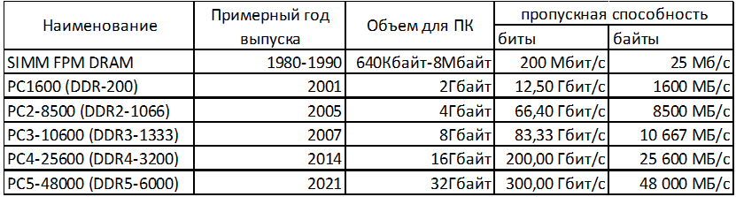
Пропускная способность памяти заложена в наименовании модели. Например, DDR3-2400 указывает на то, что данный модуль памяти может работать на частоте 2400 МГц. Альтернативное наименование той же модели PC3-19200 указывает, что эта DDR 3-го поколения и может передавать 19200 Мбайт в секунду (2400*8=19200).
Важно понимать, что указанная пропускная способность является пиковой при непрерывном обращении: средняя скорость передачи меньше.
Скорость обращения к внешней памяти.
Дать временной анализ скоростей внешней памяти несколько затруднительно: в качестве внешней памяти выступали различные устройства различных объемов и с различными скоростями. Если опустить перфокарты и перфоленты, а также магнитные барабаны и магнитные ленты, мало используемые при работе персональных ЭВМ, то в истории персональных компьютеров присутствовали и гибкие магнитные диски (дискеты) различного объема, и лазерные диски, и встречающиеся по сей день жесткие магнитные диски, и флеш-память.
У каждого из типов внешней памяти своя история эволюции, свои технические параметры.
Например, размер дискет (1980-2010 гг.) - 1,2Мбайт и 1,44 Мбайт. Скорость передачи данных дисковода порядка 62 Кбайт/с; среднее время поиска — 84 мс. Таким образом, время чтения содержимого дискеты составляло примерно 20 секунд.
Переходя к современным носителям, надо иметь в виду, что скорость записи и скорость чтения для внешней памяти могут иметь существенные различия из-за природы носителя информации. Также различается скорость доступа при последовательном обращении к памяти и при обращении к случайным фрагментам.
Поэтому ограничимся минимальными цифрами, способными дать представление о скоростях той или иной временной эпохи, приведя характеристики некоторых накопителей на жестких магнитных дисках.
1991 год – накопитель на жестком магнитном диске Maxtor 7040A, 40 Мбайт. Пропускная способность интерфейса составляет 800 кбайт/с (0,8 Мбайт/с).
1996 год - Quantum Fireball ST3.2A. Переход на файловые системы FAT32 и UltraATA/33. Пропускная способность интерфейса составляла 31,3 Мбайт/с, а внутренняя скорость передачи данных была заявлена в 132 Мбит/с (около 16 Мбайт/с). В реальности - порядка 10 Мбайт/с.
1998 год - IBM DTTA-351010 с кэшем 512 кбайт показал максимальную скорость передачи данных 12,4 Мбайт/с, в то время как пропускная способность интерфейса составила 31,4 Мбайт/с.
Скорость передачи данных для дисков 2001-2008 годов – от 40 до 110 Мбайт/с.
Скорость чтения бюджетного жесткого диска на сегодняшний день достигает 100- 150 Мбайт/с.
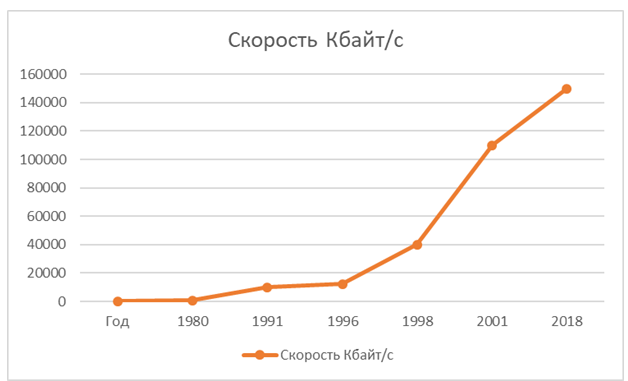
Для твердотельных накопителей скорость чтения составляет порядка — 500-600 Мбайт/с. При обращении к внешней «флешке» скорость обращения зависит как от типа памяти, так и от интерфейса подключения.
Скорости интерфейсов.
Ниже приведена таблица, содержащая приблизительные цифры, отражающие скорости тех или иных интерфейсов. Помимо скорости интерфейса в таблице приведены расчетное время передачи фотографии (размером 5 Мбайт) и время передачи фильма (размером 5 Гбайт) с использованием каждого интерфейса.
Условность указанных цифр объясняется тем, что передача данных рассчитывается в Мбитах в секунду, а объем данных – в Мбайтах в секунду. Но при передаче в ряде случаев на каждые 8 бит передаваемой информации передается 10 бит данных. Некоторые интерфейсы могут работать в двухканальном режиме. Кроме этого, при составлении таблицы не рассматривались ВСЕ версии каждого протокола.
Обратите внимание, что в таблице указаны годы появления и, соответственно, применения интерфейса.
Используйте данную таблицу для анализа применимости того или иного интерфейса для передачи данных.
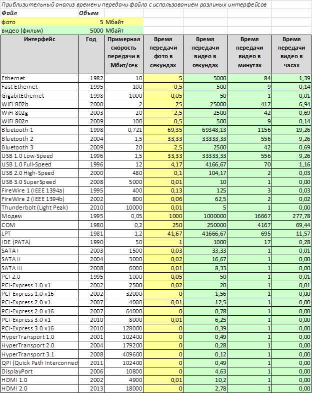
Тестирование вычислительных систем.
Анализируя характеристики компонентов вычислительной системы, можно увидеть, что скорость работы системы определяется не быстродействием одного, отдельно взятого компонента, а оптимальной конфигурацией системы в целом.
Оценить загрузку и производительность системы в целом возможно различными инструментами. Наиболее простой и очевидный – диспетчер задач, встроенный в операционную систему.
Для вызова диспетчера задач можно использовать комбинацию клавиш Ctrl+Shift+Esc или Ctrl+Alt+Del.
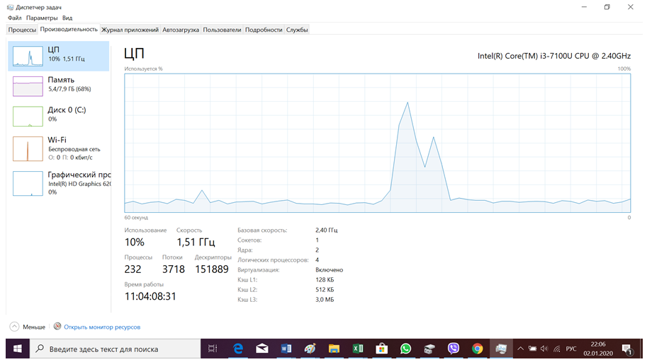
Как видно из скриншота диспетчера задач, на вкладке «Производительность» отображаются характеристика и текущее состояние основных компонентов вычислительного устройства: центрального процессора, оперативной памяти, диска (внешней памяти), сетевых адаптеров и графического процессора.
О процессоре выводятся следующие сведения: модель процессора, количество ядер, максимальная частота, объем кеш-памяти и текущая загрузка процессора.
Конкретизировать эти сведения можно, открыв монитор ресурсов, который отражает информацию о загрузке ядер процессора, о выполняемых процессах, о проценте загрузки процессора данным процессом.
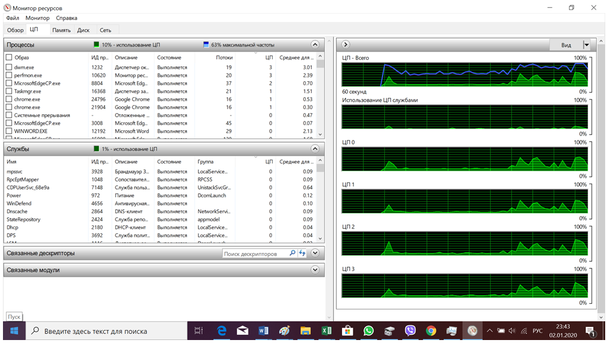
По оперативной памяти отображаются общий объем, используемый объем, возможность расширения.
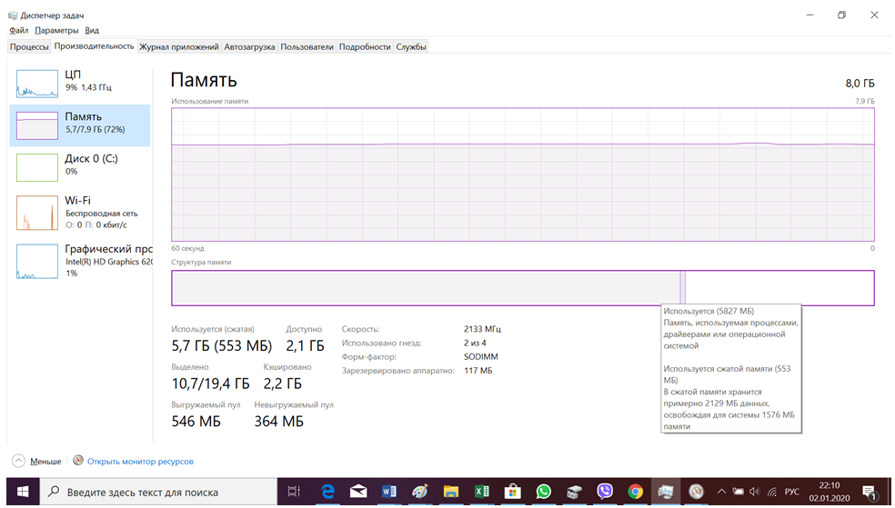
Монитор ресурсов конкретизирует объем памяти, занимаемый каждым процессом.
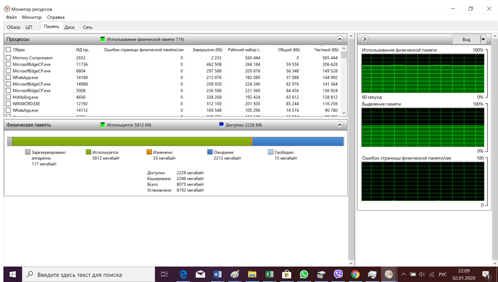
По внешней памяти диспетчер задач отображает на диаграмме процент времени на обработку диском запросов чтения или записи, а также скорость обмена данными с диском по мере выполнения вычислительным устройством поставленных задач.
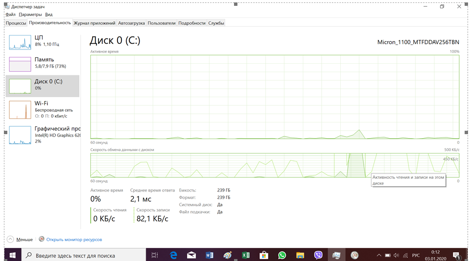
Монитор ресурсов отображает среднюю скорость чтения из файла и записи в файл за последнюю минуту в байтах в секунду для процессов с дисковой активностью.
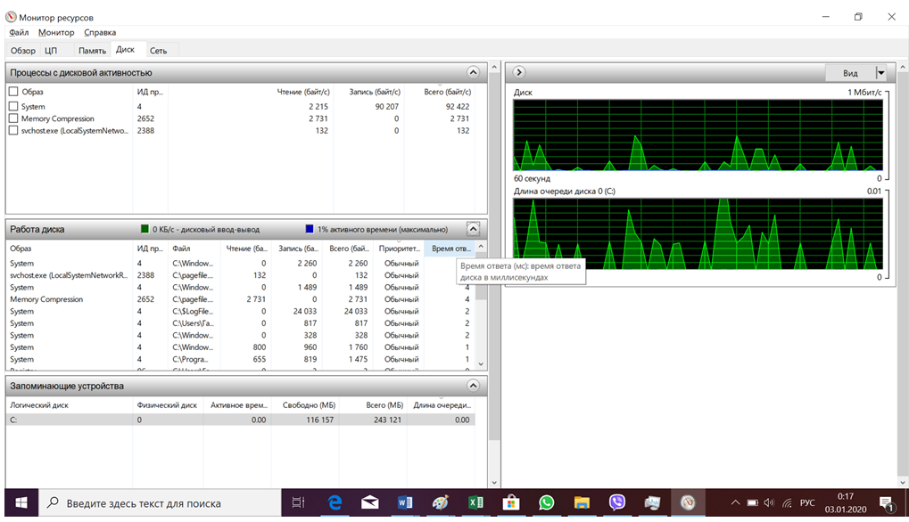
О сетевых подключениях можно получить следующую информацию: модель сетевой платы, характеристики подключения, интенсивность передачи информации и текущие скорости отправки и приема информации.
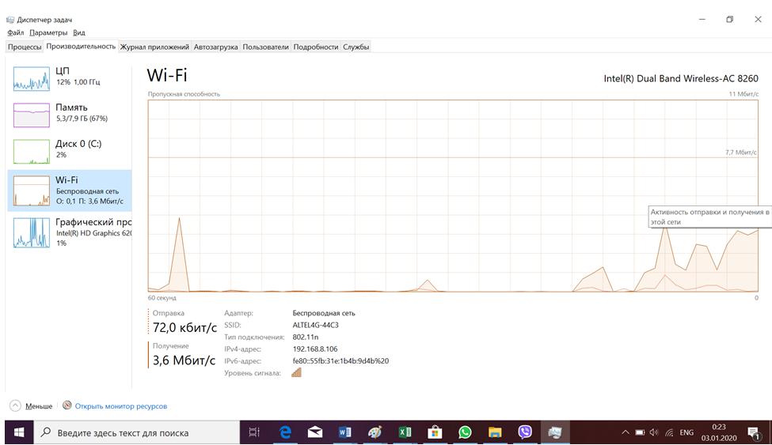
Монитор ресурсов дает развернутую информацию по характеристикам сетевых подключений и состоянию портов.
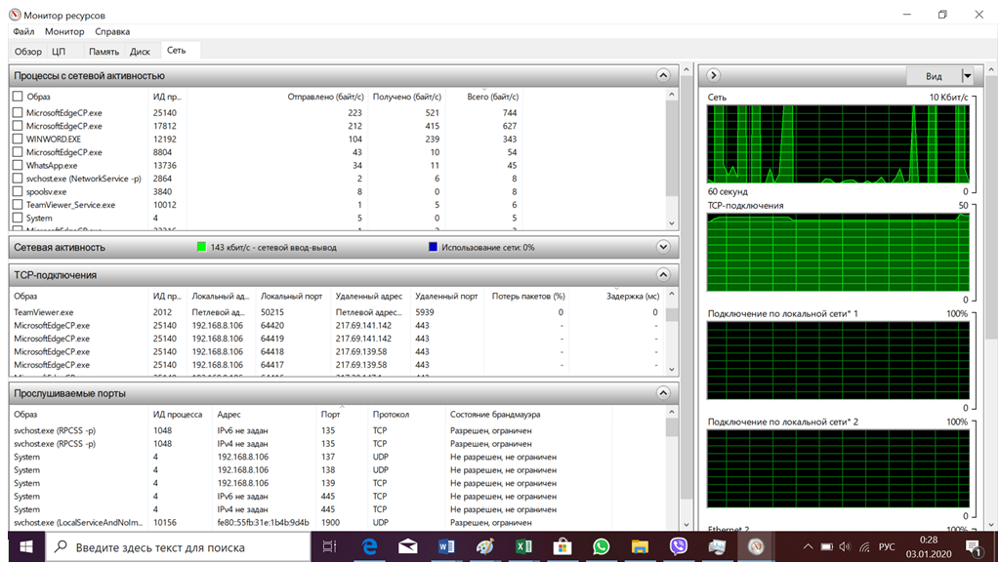
Помимо диспетчера задач с монитором ресурсов существует ряд тестовых программ, проверяющих реальные скоростные параметры устройств в различных режимах работы: при небольшой и при существенной нагрузках, при последовательном или случайном доступе к памяти и проч. Существуют также так называемые стресс-тесты, которые проверяют устойчивость системы к существенным нагрузкам или к перегрузкам.
Например, стресс-тест FurMark проверяет работоспособность видеоплаты, давая стрессовую нагрузку. Видео-результат – рисование на экране лохматого, движущегося тора.
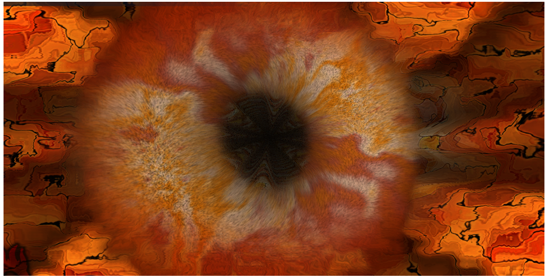
При запуске данной (и ей подобных) программы следует быть особо осторожным, так как следствием работы программы могут стать перегрев и выход из строя процессора. При работе программы следует следить за температурой. Предпочтительнее выставить предупреждение о перегреве в настройках (по умолчанию стоит 100 градусов). Помните, что даже 90 градусов достаточно для фатального повреждения оборудования.
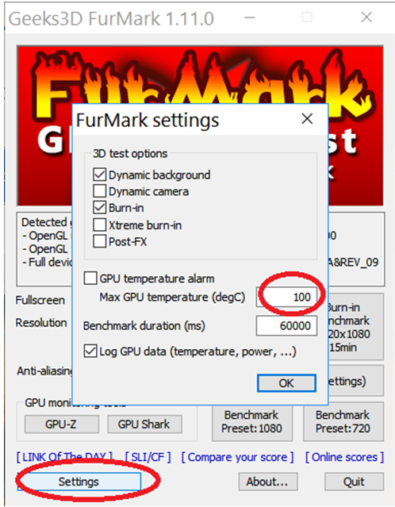
Детальная информация о процессоре, памяти и плате может быть получена при помощи программы CPU-Z.
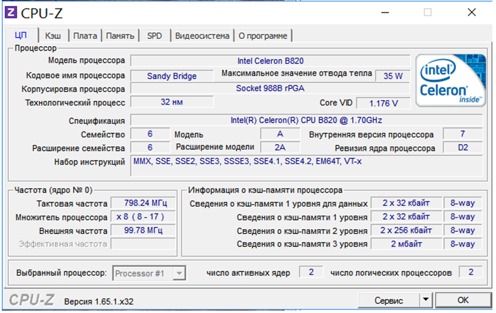
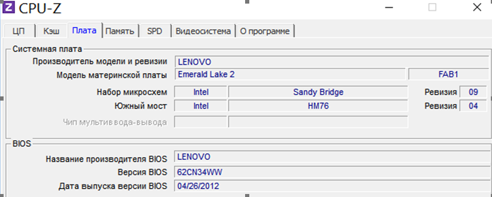
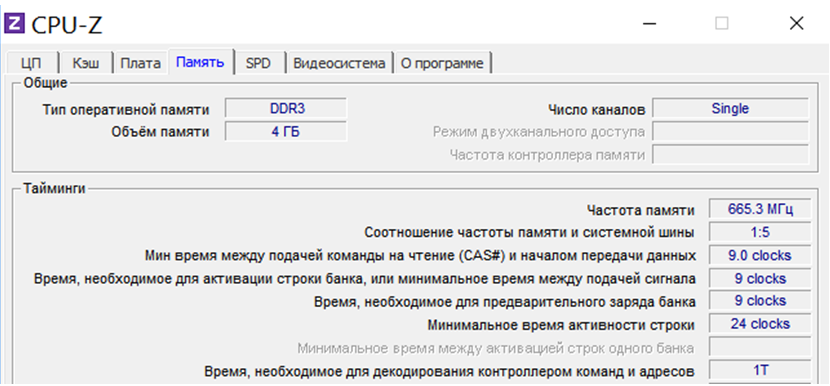
Как видно из рисунков, CPU-Z позволяет определить процессор, материнскую плату, оперативную память, видеокарту, установленную в системе.
- Процессор: модель процессора, техпроцесс, количество ядер, напряжение ядра; внутренняя и внешняя частоты, текущий множитель процессора; поддерживаемые наборы инструкций; информация о кеш-памяти.
- Материнская плата: производитель, модель и ревизия; производитель, дата и модель BIOS; чипсет (северный и южный мосты) и датчики; графический интерфейс.
- Оперативная память: тип, объем, количество каналов, частота работы, тайминги.
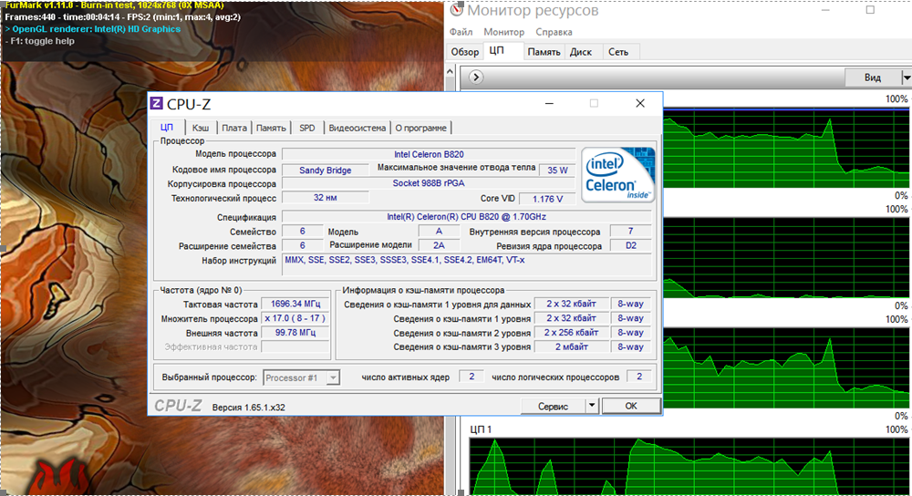
Обратите внимание на монитор ресурсов: при запуске программы стресс-теста все ресурсы ЦП оказались задействованы практически с 100%-ой загрузкой.
Другая программа - GPU-Z определяет установленную видеокарту, ее процессор, тип и количество памяти, датчики:
- Видеокарта: название видеокарты; техпроцесс, площадь кристалла, количество транзисторов, тип и количество памяти; пропускная способность памяти; тип и ширина шины; частота памяти; версия драйвера и BIOS'а.
- Датчики: частота ядра GPU; частота памяти GPU; температура GPU; скорость кулера; загрузки GPU в реальном времени.
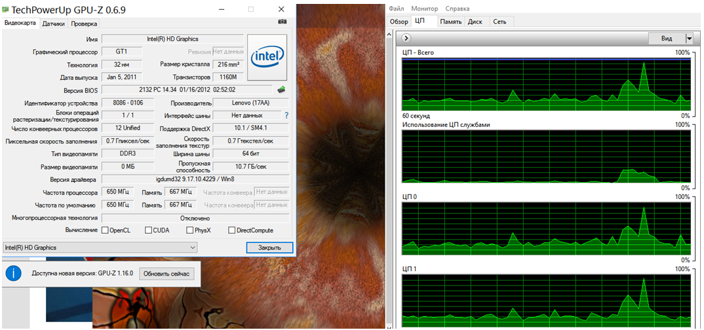
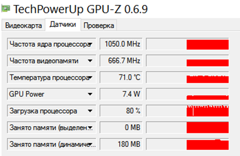
Интересной является программа проверки памяти и стабильности процессора S&M, являющаяся по сути утилитой для стресс-тестирования.
S&M изначально была разработана для тестирования и поиска ошибок в работе процессора и оперативной памяти, проверки стабильности работы элементов питания материнской платы и эффективности системы охлаждения, позже в ней появились возможности по проверке блока питания под сильной нагрузкой на основные компоненты системы (включая видеокарту).
Внимание! Перед запуском программы рекомендуется закрыть все программы. Программа тестирует стабильность процессора и системной памяти, и при недостаточном качестве охлаждения процессора или проблемах с памятью возможно зависание компьютера. Если в процессе тестирования открыты важные документы , то при сбое данные могут быть утеряны.
Подробнее о данной программе можно прочитать на ресурсе https://www.overclockers.ru/softnews/20390.shtml.
При запуске программы первым начинает работать процессорный набор тестов, по очереди запускаются тесты кэшей L1 и L2, тесты блока целочисленных вычислений и вычислений с плавающей запятой (последний генерирует максимум тепла и сильнее всего нагревает процессор), тест блока питания. Во время каждого теста ведется контроль целостности данных, в результате которого нестабильность процессора при высокой нагрузке становится очевидной.
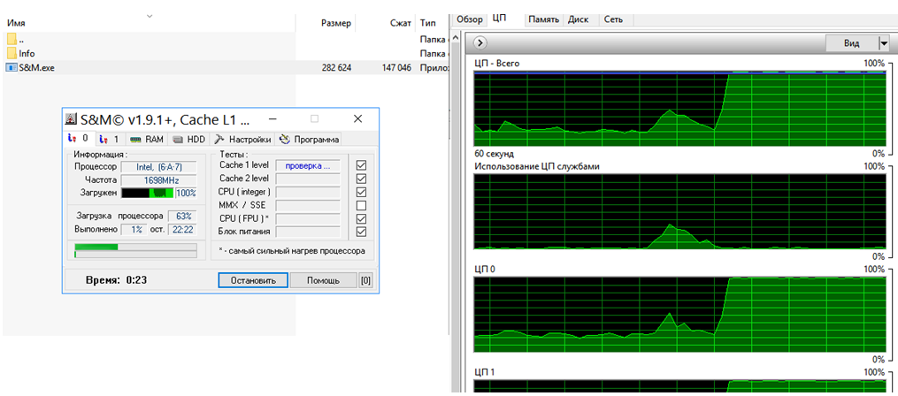
На рисунке приведены состояние в начале тестирования и рекомендованное прерывание тестирования из-за существенного перегрева процессора ноутбука. Перегрев возник в процессе тестирования на операциях с плавающей точкой (самые тяжелые тесты для процессора). Для ноутбука, не имеющего мощной системы вентиляции, данная ситуация ожидаема.
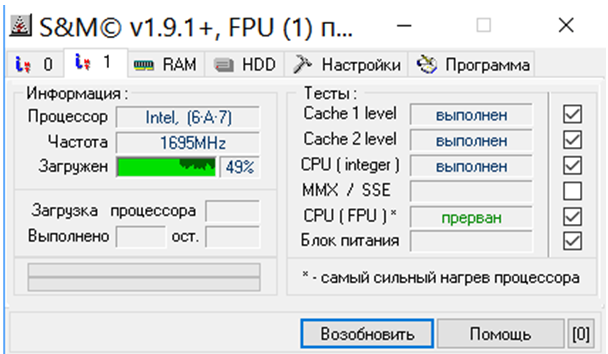
Для тестирования скорости чтения и записи на внешнюю память можно использовать программу для Windows CrystalDiskMark, которая умеет проводить замеры средней скорости чтения и записи данных установленных жёстких магнитных дисков и SSD-накопителей, а также - подключенных по USB накопителей. В отличие от многих программ-аналогов, CrystalDiskMark позволяет определять скорость чтения и записи на отдельных разделах диска.
Настройка программы (строка вверху) предусматривает выбор конкретного раздела диска или подключённого устройства (флешки, USB-HDD, USB-SSD). Ячейки левее – это циклы чтения и записи эталонного файла с определённым размером, который программа будет временно помещать на тестируемый раздел диска или устройство. По умолчанию установлено количество циклов 5 при размере файла 1000 Мб; данные параметры можно использовать для жёстких магнитных дисков HDD. При тестировании твердотельного диска, чтобы лишний раз не подвергать износу SSD-накопитель, рекомендуется снизить количество циклов до 3-х при размере файла 100 Мб.
В программе CrystalDiskMark вводятся понятия глубины очереди записи/чтения и потока. Поток определяет количество одновременных процессов записи и чтения информации диска: чем больше показатель потока, тем выше нагрузка на накопитель. Глубина очереди отвечает за количество запросов, которые обрабатывает диск: чем больше этот показатель, тем больший объем сможет обработать накопитель и выше эффективность тестирования. (источник: https://crystaldisk.ru/crystaldiskmark (Ссылки на внешний сайт.)Ссылки на внешний сайт. )
Процесс измерения скорости чтения и записи данных запускается кнопкой «All», по которой стартуют все представленные ниже тесты чтения и записи данных.
- «Seq Q32 T1» — запускается тестирование последовательного чтения и записи данных; в 1 поток и с глубиной очереди 32. Этот тест используется при вычислении скорости копирования файлов от 500 Мб и выше. Использовать его необходимо при анализе разделов накопителя информации, на которых планируется размещение большого объема данных. Последовательное измерение чтения и записи данных считается показательным параметром, поскольку именно его значения производители указывают в характеристиках носителей информации.
- «4К Q32 T1» — запускается тестирование случайного чтения и записи блоков размером 4 Кб: глубина очереди – 32, количество используемых потоков – 1.
- «Seq» — запускается тестирование последовательного чтения и записи блоков, размер которых составляет 4 Кб.
- «4К» — запускается тестирование случайного чтения и записи блоков, размер которых составляет 4 Кб.
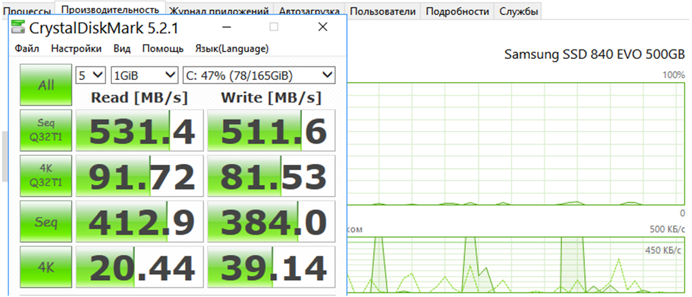
Обратите внимание на окно диспетчера задач (на рисунке справа), отображающее обращения к тестируемому диску.
Как видно из результатов тестирования, скорости случайного доступа существенно отличаются от скорости последовательного доступа, указанного производителем.
Для тестирования скорости работы оперативной и кеш-памяти можно применить программу benchmem. Детальное описание программы можно прочитать на http://testmem.tz.ru/benchmem.htm (Ссылки на внешний сайт.)Ссылки на внешний сайт.. Данная программа позволяет определить скорость работы оперативной памяти и кеш-памяти в различных режимах работы и наглядно (в виде диаграмм) показывает, что скорость работы памяти непостоянна и зависит от различных параметров.
При запуске программы первым тестом проверяется и выводится на диаграмму скорость обращения к кеш-памяти (по оси Y) в зависимости от размера запрашиваемых данных (по оси X).
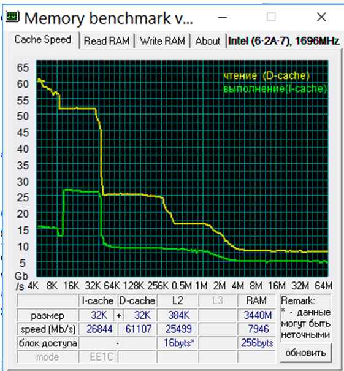
Обратите внимание на резкое понижение скорости обращения к кеш-памяти при увеличении объема и объясните причину.
Следующими тестами определяется скорость чтения и записи оперативной памяти при различных значениях «прыжка» по адресам. Например, значение по оси X «1Kb» означает, что следующий адрес данных смещен от текущего на 1Kb в сторону большего адреса, скорость чтения или записи информации отображается по оси Y. Значения с отрицательными числами соответствуют смещению адреса следующего блока в сторону уменьшения адресов. Цифра 0 обозначает прямое, последовательное, потоковое чтение или запись.
На каждой диаграмме (чтения или записи) приводятся несколько графиков различных цветов. Каждый график отображает результаты при чтении или записи данных размером, указанным в правом верхнем углу диаграммы.
В диаграмме записи сплошные линии в тесте означают запись, минуя кэш, а пунктирные - через кеш-память.
Диаграммы наглядно показывают, что скорость при работе с оперативной памятью зависит от размера читаемых/записываемых блоков, а также – от степени «разбросанности» требуемых данных.
Обратите внимание на различное «поведение» графиков при различных размерах блоках данных и на изменение значения скорости. Объясните причину.
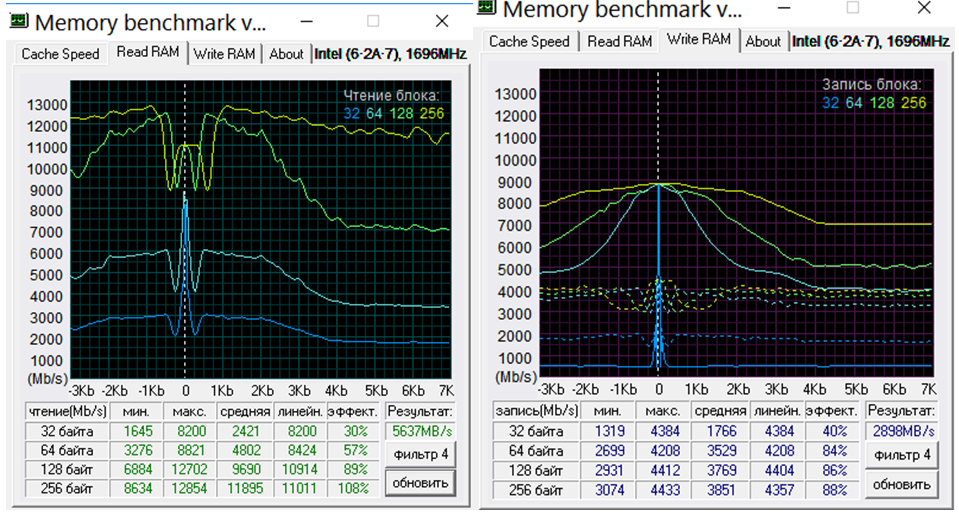
Описанные выше средства тестирования позволяют определить скорость работы комплектующих, но не всегда скорость передачи информации определяется только скоростью работы устройства. В реальных условиях скорость передачи информации зависит также от скорости интерфейса и от условий его эксплуатации. Классическим примером может служить тест скорости приема/передачи данных через внешние порты (в частности – через сетевое подключение). Данный тест можно провести самостоятельно: для этого достаточно ввести/вывести достаточно большой объем информации и определить время передачи. Этот прием будет использоваться в 5 и 6 лабораторных работах. Можно использовать сервисы сети Интернет, позволяющие определить скорость приема/передачи при подключении к сети Интернет. Ниже показан результат тестирования с использованием speedtest.net.
Относительно невысокий результат на рисунке объясняется беспроводным подключением.
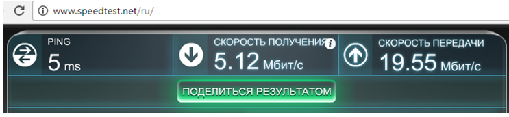
Данная лабораторная работа посвящена определению и анализу результатов производительности вычислительной системы.
План работы.
План работы носит рекомендательный характер. Инициатива и творчество студентов приветствуются.
1. Изучить теоретический раздел.
2. Изучить на персональных компьютерах и/или ноутбуках программы тестирования оборудования: cpu-z cpu-z_1.94-en.zip, gpu-z GPU-Z.0.6.9-Rus.exe, furmark rsload.net.FurMark.1.11.0.zip, s&m snm.zip, CrystalDiskMark CrystalDiskMark5_2_1.zip, benchmem benchmem.zip(или любые иные, им аналогичные) и диспетчер задач с монитором ресурсов.
В процессе мониторинга обратите внимание на следующие параметры:
- Центральный процессор: частота, сокеты, ядра, процессы, потоки, равномерность загрузки ядер, пики загрузки процессора (когда они возникают).
- Оперативная память: сколько занято, чем именно? сколько доступно? Проведите количественную оценку используемой памяти различными приложениями. Частота работы (Не путать со скоростью!).
- Диск (внешняя память): загруженность диска, скорость обмена данными с диском.
- Сетевая активность (если есть сетевое подключение): приблизительная скорость обмена и равномерность нагрузки.
При ознакомлении с результатами тестов обратите внимание на следующие параметры:
- Частота процессора (ядер процессора), внешняя частота, множитель процессора.
- Частота ядер процессора – меняется или нет? Почему?
- Тип, частота, размер оперативной памяти.
- Предполагаемая скорость работы оперативной памяти (пропускная способность)?
- Достигнутая скорость работы оперативной памяти: совпадает или нет с предполагаемой. Причины результатов.
- Размер кеш-памяти и скорость ее работы. Сравнение скорости кеш-памяти и оперативной памяти.
- Скорость внешней памяти. Предполагаемая скорость, сравнение скорости внешней памяти и оперативной памяти.
3. Разработать для проведения лабораторной работы серию тестов для определения производительности, устойчивости, сбалансированности системы.
4. Выполнить тестирование. Зафиксировать результаты. Для тестов оперативной памяти и кеш-памяти зафиксировать полученные диаграммы.
ВНИМАНИЕ! При проведении тестирования обращать внимание на результаты мониторинга.
5. ОЦЕНИТЬ результаты тестов. СРАВНИТЬ полученные скоростные характеристики со скоростями, заявленными производителем (последние посмотреть на сайтах производителя). Определить соответствие скоростей комплектующих тестируемого устройства и интерфейсов. Сделать выводы.
6. Сформировать отчет по лабораторной работе и защитить лабораторную работу. В отчет внести описание экспериментов, результаты и выводы. Проанализировать результаты тестов и определить «узкие места» тестируемой системы (или их отсутствие). При защите надо знать ответы на контрольные вопросы, уметь объяснить результаты экспериментов.
Контрольные вопросы
- Что такое генератор тактовых импульсов? Для чего он нужен?
- Что такое частота? Что такое базовая частота?
- Что такое множитель процессора? Частоты современных процессоров?
- В чем измеряется производительность процессора? Почему?
- В чем измеряют производительность оперативной памяти?
- В чем измеряют производительность внешней памяти?
- Скорости передачи Ethernet различных поколений?
- Скорости передачи Wi-Fi различных поколений?
- Скорости передачи USB различных поколений?
- Скорости передачи SATA различных поколений?
- Скорости передачи PCI и PCI-Express различных поколений?
- Для чего нужны тестовые программы?
- Что такое стресс-тест?
- Сравните скорости оперативной памяти и внешней памяти.
- Сравните скорости оперативной памяти и кеш-памяти.
- Что влияет на скорость чтения и/или записи при обращении к оперативной памяти?
- Почему различаются скорость внешней памяти в режиме произвольного и последовательного доступа?
- Что такое тайминги?